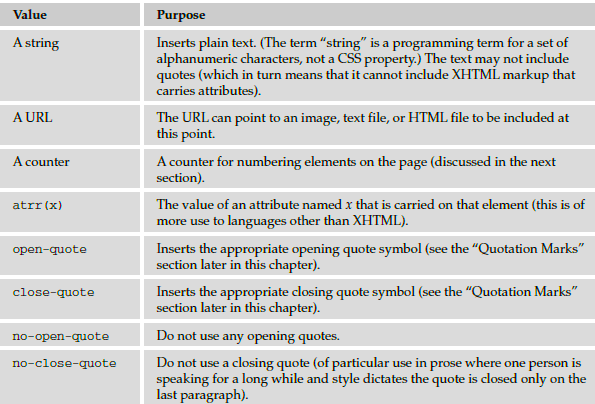

Generated Content
CSS2 introduced a powerful way to add content before or after a specified element, even if it was not in
the XHTML document. To do this, the :before and :after pseudo - elements are added to the selector
and then the content property is used to specify what should be inserted into the document.
The :before and :after pseudo - elements work to a limited degree in IE7 or higher and have good
support in Firefox.
The :before and :after Pseudo - Elements
The :before and :after pseudo - elements enable you to add text before or after each instance of an
element defined in a selector. For example, the following CSS rule adds the words “ You need to register
to read the full article ” after each instance of a < p > element that carries the class attribute whose value
is abstract ( ch08_eg21.css ):
p.abstract:after {content: “You need to register to read the full
article.”;
color:#ff0000;}
Here you can see that the pseudo - element :after is used at the end of the selector. Then, inside the
declaration, you can see the content property; the text in quotes will be added to the end of the element.
The content property can add a number of types of content to the document, not just text, and you will
see these in the next section.
The content Property
The content property is used with the :before and :after pseudo - elements to indicate what content
should be added to the document. The table that follows lists the values it can take; each value inserts
different types of content into the XHTML document it is supposed to be styling.

Counters
You have already seen how you can create a number list using the < ol > element, so the concept of
automatic numbering is not new. The counter() function is different from numbered lists because you
can create a counter that increments each time a browser comes across any specified element — not just
an < li > element.
The idea is particularly helpful if you want to automatically number sections of a document without
them being a list. It also means that items will automatically be renumbered if extra elements are added
or removed (without having to go into the document and manually renumber each item).
In order to see how it works, we will create an example where the sections of a document are going to be
numbered using the counter() function. Here is the XHTML
< body >
< h1 > Introducing Web Technologies < /h1 >
< h2 > Introducing HTML < /h2 >
< h2 > Introducing CSS < /h2 >
< h2 > Introducing XHTML < /h2 >
< h1 > Structure of Documents < /h1 >
< h2 > Text < /h2 >
< h2 > Lists < /h2 >
< h2 > Tables < /h2 >
< h2 > Forms < /h2 >
< /body >
The example is going to contain two counters, one called chapter and the other called section . Each
time an < h1 > element comes up, the chapter counter will be incremented by 1, and each time the < h2 >
element comes up, the section counter will be incremented by 1.
Furthermore, each time the browser comes across an < h1 > element, it will insert the word “ Chapter ” and
the number in the counter before the content of the < h1 > element.
Let ’ s take a look at how this works. First, it is worth noting that you use the counter - reset property
on the < body > element to create the chapter and section counters and set them to zero.
body {counter-reset: chapter; counter-reset: section;}
Then there are the CSS rules using the :before pseudo - class to insert the automatic numbering of
sections. First look at the rule that adds the word Chapter and the chapter number before every < h1 >
element; if you look at the content property, the value has a set of quotes containing the word Chapter ,
followed by the counter() function (inside the brackets you can see the name of the counter). After this,
you can see another set of quotes containing the colon symbol followed by a space:
h1:before {content: “Chapter “ counter(chapter) “: “;}
The content property that adds the section numbering before the < h2 > elements starts with the
counter() function calling the chapter counter and follows that with a period (or full stop) in quotes,
then calls the counter() function again, this time with the section number:
h2:before { content: counter(chapter) “.” counter
(section) “ “; }
Each time the browser comes across an < h2 > element, it should increment the section counter using
the counter - increment property:
h2 {counter-increment: section; }
Each time the browser comes across an < h1 > element, it should increment the chapter counter using
the counter - increment property and reset the section counter:
h1 {counter-increment: chapter; counter-reset: section;}
When you put these rules together, they should look like this ( ch08_eg22.css ):
body {counter-reset: chapter; counter-reset: section;}
h1:before {content: “Chapter “ counter(chapter) “: “;}
h2:before { content: counter(chapter) “.” counter
(section) “ “; }
h1 {counter-increment: chapter; counter-reset: section;}
h2 {counter-increment: section; }
The first version of IE to support the counter functions was IE8, although Firefox and Safari have
enjoyed support for this feature for longer.